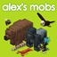

Um dos mods mais criativos do Minecraft, ficou marcado por suas máquinas mecânicas e sistemas engenhosos. Ele permite automações complexas de um jeito visual e intuitivo.

Um dos mods tecnológicos mais completos do jogo, ganhou destaque por suas fábricas avançadas e geração de energia. Traz progresso rápido e muitas ferramentas poderosas.

Um mod famoso por adicionar vida ao mundo, ficou conhecido por suas criaturas detalhadas e comportamentos únicos. Cada animal torna a exploração mais divertida e imersiva.